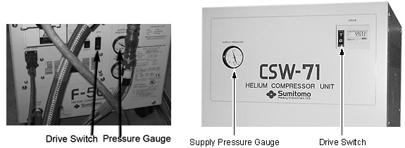
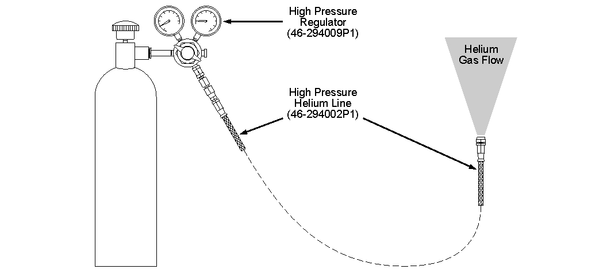
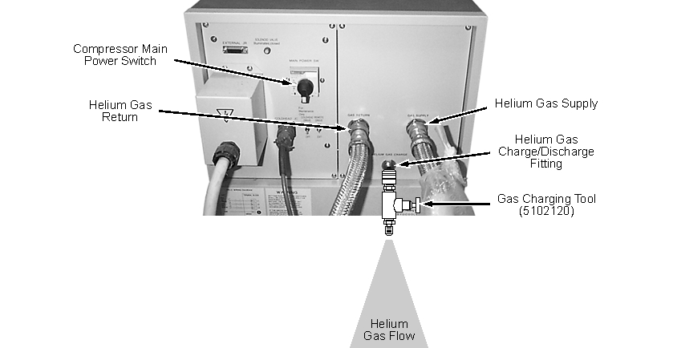
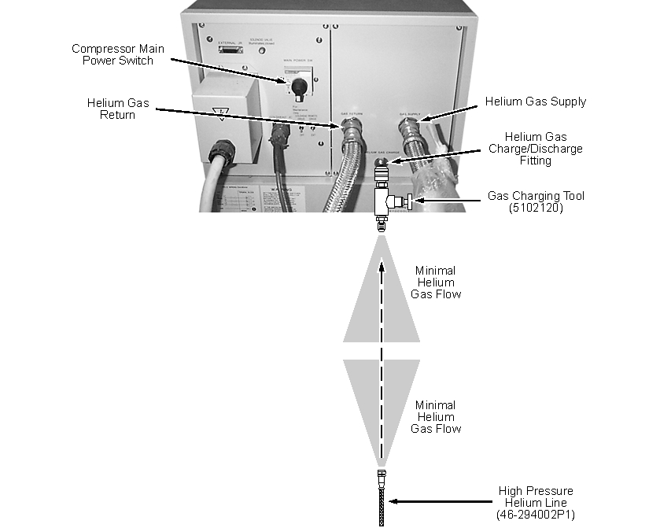

Operating Documentation
Direction 5670000, Rev# 1
Optima MR450w 1.5T Service Methods
Module Version 5.0, Version Date 2/9/10
Operating Documentation |
| Required Persons | Preliminary Reqs | Procedure | Finalization |
|---|---|---|---|
| 2 | Included in Procedure | 1.5 hours | Included in Procedure |
Compressor gas pressure must be within the range stated in the vendor's service manual for proper operation of the Cryocooler. Use the following procedures to check and adjust the pressure to specification if required.
| Item | Qty | Effectivity | Part# | Manufacturer | |
|---|---|---|---|---|---|
| Brass Master Padlock with Brass Shackle | 1 | - | 46-194427P320 | - | |
| Brass Master Transition Padlock | 1 | - | 2387081 | - | |
| Black & White on Red Lockout Tag | 1 pkg. of 25 | - | 46-194427P322 | - | |
| Transition LOTO Tag | 1 | - | 46-194427P313 | - | |
| Line Cord Plug Cover, Plugs ≤3 in. (76 mm) wide x ≤5.875 in. (149 mm) long, Cords ≤1.25 in. (31 mm) diameter | 1 | - | 46-194427P321 | - | |
| High Pressure Helium Regulator (included in Coldhead/Compressor Service Kit 46-281088G3) | 1 | - | 46-2940009P1 | - | |
| Helium Line Adapter Hose (included in Coldhead/Compressor Service Kit 46-281088G3) | 1 | - | 46-294002P1 | - | |
| Gas Charging Tool | 1 | - | 5102120 | - | |
| Digital Voltmeter (DVM), Volt-Ohm Meter (VOM) or noncontact voltage tester | 1 | - | - | - | |
| Titanium Tool Kit: Basic Set 5113258 or Installation Set 5112581 or other non-ferromagnetic tools (magnets with magnetic fields >1.5T) | 1 kit | - | 5113258 or 5112581 | - | |
| Item | Qty | Effectivity | Part# | Manufacturer |
|---|---|---|---|---|
| 99.999% (five nines) Helium Gas, 235 SCF Nonmagnetic Cylinder | 1 | - | - | - |
| ||||
| Potential High Pressure Gas Release Hazard! | ||||
| Potential explosive release of high pressure (~1.62 MPa, 16.5 KgF/cm*CM*G, 235 psig) helium gas if cryocooler system components are hit with sharp edge or touched with pointed object. | ||||
| Handle equipment with care. Keep sharp edged/pointed objects away from Cryocooler system. |
| ||||
| Electrical Shock Hazard! | ||||
| Contact with connectors leading to an energized power supply can cause electrical shock. | ||||
| Follow OSHA Lockout-Tagout (LOTO) procedures while making electrical connections to a cryocooler Compressor. |
| ||||
Observe the following:
| ||||
Check Cryocooler system gas pressure as required for magnet temperature/pressure troubleshooting.
| ||||
| Operating (dynamic high-side) pressure checks done while the Cryocooler system is NOT at equilibrium (Coldhead not at ~4.2K) will not be accurate. | ||||
Verify that the Cryocooler system is at equilibrium (~4.2K) by performing Temperature Sensor Checks.
Check the operating (dynamic high-side) pressure of the Cryocooler system. Compare to the specifications shown in the table below.
Table 1: Compressor Operating Pressures
| Connected To | Compressor Operating (Dynamic High Side) Pressure | ||
|---|---|---|---|
| MPa (Approx.) | KgF/cm2G | psig | |
| RDK-408 4K Two-Stage Coldhead | 2.10 to 2.30 | 21.4 to 23.5 | 319 to 333 |
| F50 and RRDK-408 4K Two-Stage Coldhead | 1.90 to 2.20 | 19.4 to 22.43 | 276 to 319 |
Illustration 1: Front of Compressors

The supply pressure gauge (shown above) displays static pressure when the compressor is off and high-side dynamic pressure when the compressor is on.
If the dynamic high-side pressure is outside the acceptable range:
Turn the Cryocooler system off.
| ||||
| Electrical Shock Hazard! | ||||
| Contact with connectors leading to an energized Compressor can cause electrical shock. | ||||
| Whenever the input power to the Compressor is disconnected, follow loto procedures to make sure power is not supplied to the Compressor. |
Disconnect and LOTO input power to the Cryocooler Compressor. Verify that no voltage is present by using a DVM or equivalent measuring device.
Allow the system to stabilize.
Check the static pressure and compare to the specification shown in the table below.
Table 2: Compressor Static Gas Pressures
| Connected To | Compressor Static Gas Pressure at 20°C ( 68°F ) | ||
|---|---|---|---|
| MPa (Approx.) | KgF/cm2G | psig | |
| RDK-408 4K Two-Stage Coldhead | 1.60 to 1.65 | 16.3 to 16.8 | 232 to 239 |
| F-50 and RDK-408 4K Two-Stage Coldhead | 1.60 to 1.65 | 16.3 to 16.8 | 232 to 239 |
If both the dynamic and static pressures are out of range, adjust static pressure to conformance with “Gas Pressure Adjustment” (next section).
Obtain a full cylinder of certified 99.999% helium gas.
Attach and tighten the high pressure regulator (46-294009P1) to the gas cylinder.
Adjust the regulator handle clockwise (CW) as required to allow gas flow.
Attach and tighten the high pressure helium line (46-294002P1) to the regulator. (See the illustration below.)
Illustration 2: Purging Helium Line

| ||||
| Fatal Explosive Hazard! | ||||
| Potential release of high pressure (2400 psig) gas. | ||||
| To prevent possible fatal explosive release of gas, open the gas cylinder main valve very slowly. |
Establish gas flow through the regulator and high pressure helium gas line by slowly opening the valve on the gas cylinder counterclockwise (CCW), and adjusting the regulator handle CW to produce an audible gas flow.
Purge the regulator and gas line for 30 seconds, then back out the regulator handle CCW to limit the gas flow until it is just detectable at the end of the gas line.
Verify that the compressor's main power switch is off (Illustration 3) and that static pressure is stable (Illustration 1).
| NOTE: | The supply pressure gauge displays static pressure when the compressor is off and high-side dynamic pressure when the compressor is on. |
Illustration 3: Purging the Gas Charging Tool

Verify that the Gas Charging Tool (5102120) valve is fully closed (CW), then slowly open the valve one (1) turn CCW to allow gas flow.
Remove the protective cap on the No. 4 male Aeroquip coupling at the compressor's charge/discharge fitting. (See Illustration 3.)
| NOTE: | Illustration uses CSW-71 Compressor. The procedure for the F-50 compressor is identical. |
Immediately attach and tighten the Gas Charging Tool's No. 4 female Aeroquip coupling to the compressor's charge/discharge fitting.
Adjust the valve CCW on the Gas Charging Tool to produce an audible gas flow.
Purge the Gas Charging Tool for five seconds, then turn the valve CW until the flow is just detectable at the end of the Gas Charging Tool.
Connect and tighten the 0.25 in. flare swivel adapter at the end of the high pressure helium gas line to the 0.25 in. male connector at the end of the Gas Charging Tool while a trickle of helium gas is still flowing from each fitting. (See the illustration below.)
| NOTE: | Illustration uses CSW-71 compressor. The procedure for the F-50 compressor is identical. |
Illustration 4: Connecting Purged Helium Line to Purged Gas Charging Tool

Open the Gas Charging Tool's valve, and adjust the regulator handle to set the static pressure in the Cryocooler at the middle of the pressure range shown in Table 2.
When pressure is reached within the middle of the range, close the Gas Charging Tool's valve (fully CW), and close the gas cylinder's valve (fully CW).
Disconnect the Gas Charging Tool from the compressor, then gradually unthread the tool from the gas line to bleed pressure from the line.
Disconnect the line and regulator from the Gas Charging Tool and the gas cylinder.
Remove LOTO from the compressor.
Restore power to the compressor, and replace the cap on the compressor's charge/discharge fitting.
Verify that the compressor's main power switch is off (Illustration 3) and the static pressure is stable (Illustration 1).
| NOTE: | The supply pressure gauge displays static pressure when the compressor is off and high-side dynamic pressure when the compressor is on. |
Verify that the Gas Charging Tool (5102120) valve is fully closed (CW), then slowly open the valve one (1) turn CCW to allow gas flow.
Remove the protective cap on the No. 4 male Aeroquip coupling at the compressor's charge/discharge fitting. See Illustration 3.
Immediately attach and tighten the Gas Charging Tool's No. 4 female Aeroquip coupling to the compressor's charge/discharge fitting.
Open (CCW) the valve on the Gas Charging Tool as required to decrease gas pressure.
When the gas pressure reaches the high end of the pressure range shown in Table 2, immediately close (CW) the valve on the Gas Charging Tool.
Disconnect the Gas Charging Tool, and replace the protective cap on the Compressor's charge/discharge fitting.
Check both static and dynamic high-side pressures (Gas Pressure Check, Gas Pressure Check) after any adjustments.
If the pressures are still out of specification, contact the On Line Center or your regional MAC Team specialist.
When pressures are within the specifications stated in Table 1 and Table 2, return the Cryocooler Compressor to operating condition by removing any LOTO, reconnecting power, and allowing the Cryocooler system to return to equilibrium.